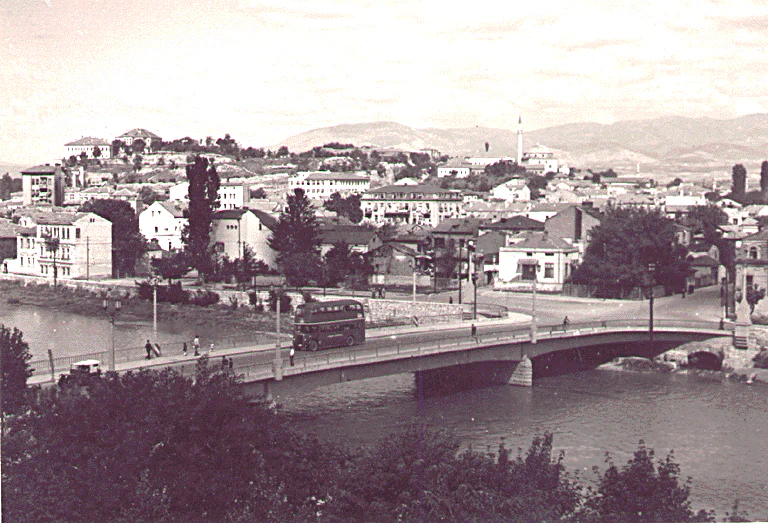
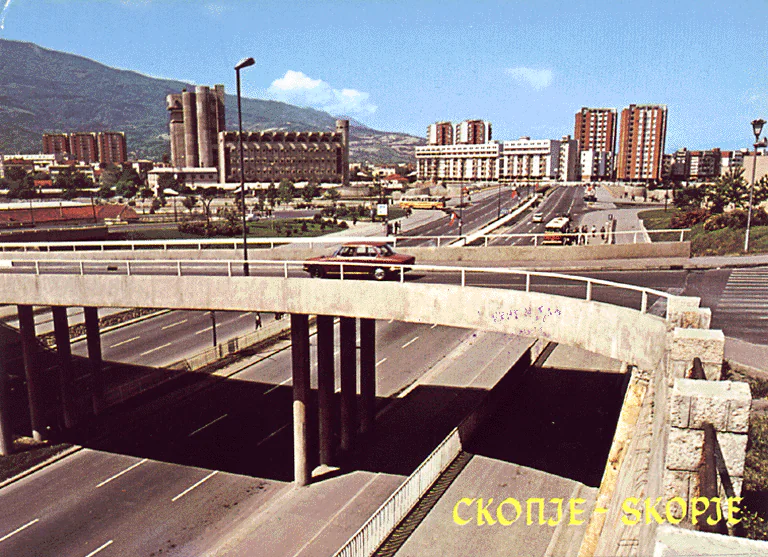

Плоштад
- Сценарио
- Димитрие Османли, Симон Дракул
- Камера
- Киро Билбиловски
- Година
- 1964
- Должина
- 00:06

Поглед на градот, со Саат кулата десно и Гази Иса беговата џамија лево, со маалото "Саат кула". (40-тите години)

Бетонскиот мост кај денешен хотел "Гранд". Во позадината се гледа скопската тврдина - Кале. (50-тите години)

Панорама на Скопје. (50-тите години)

Панорама на Скопје. Во преден план е бетонскиот мост (кај денешен Гранд хотел), а во позадината е Камениот мост и објектите: Офицерски дом и Народната банка. Десно горе се гледа скопската тврдина - Кале. Кејот е уреден како шеталиште и сообраќајница за возилата, со уредено зеленило помеѓу нив. (50-тите години)

Поглед на бетонскио мост (кај денешен Гранд хотел). Во преден план е Пајко маало. Во позадината е скопската тврдина - Кале, а десно од неа Мустафа пашина џамија. (50-тите години)

Скопје, 50-тите години, со нови стамбени објекти. Во средината е просторот на денешниот Зелен пазар.

Панорама на град Скопје. Во преден план е плоштадот Слобода. Улицата према реката Вардар е "Васил Главинов". На првиот агол од плоштадот се гледа влезот на основното училиште "Гоце Делчев". - 50-тите години

Плоштад "Слобода". Во позадината се гледаат Офицерскиот дом и Народната банка. - 50-тите години

Центарот на Скопје пред земјотресот - околу 1960 година.

Панорамска снимка на централното градско подрачје Скопје од авион. Плоштадот со офицерскиот дом, народната банка и стопанската трговска комора. На десната страна е главната пошта, а пак лево доле се гледа покривот на народниот театар. Фотографијата е направена 50-тите години.

Панорамска фотографија на централното подрачје на Скопје, - 50-тите години

Авионска снимка на централното градско подрачје пред земјотресот - 1963 година. Помеѓу кулите (горе десно), каде денеска се наоѓа трговски центар, се гледа црквата "Цар Константин и Царица Елена".

Панорама на дел од старата скопска чаршија, 50-тите години.

Поглед на дел од Битпазар и старата чаршија. Над нив се гледа Мустафа пашина џамија. (50-тите години)

Поглед на центарот на Скопје. Камениот мост се уште се користи како сообраќајна комуникација. Фотографијата е направена набргу после катастрофалниот земјотрес на 26 Јули 1963 година.

Скопје 1968 година. Локација на денешниот градски трговски центар.

Панорамска фотографија на центарот на градот. Плоштадот се уште се користи како паркинг за моторните возила.
(60-тите години)

Панорама на централниот дел од градот со регулацијата на р.Вардар, фотографирана од скопската тврдина - Кале. (70-тите години). Во преден план е Камениот мост, стоковната куќа, Пелистер и други објекти.

Поглед од скопската тврдина - Кале кон центарот на град Скопје. Шеталиштето на десната обала на р.Вардар е исполнета со народ. (70-тите години)

Поглед од скопската тврдина - Кале кон центарот на град Скопје. (70-тите години)

Поглед на левата страна од р.Вардар, веднаш до Камениот мост. Во долниот дел од фотографијата се гледа дел од црквата Св. Димитрија. (70-тите години)
Поглед на левата страна од р.Вардар, веднаш до Камениот мост. Во долниот дел од фотографијата се гледа дел од црквата Св. Димитрија. (80-тите години)

Панорама на Скопје. Во преден план е малиот парк "Жена борец". Во долниот дел лево се гледа дел од зградата на Градската болница и дел од зградата на собранието. - 80-тите години.

Паркот "Жена борец" со Градскиот трговски центар, со стамбени и општествени објекти од градот Скопје. - 80-тите години.

Поглед на булеварот и мостот "Гоце делчев" со надвозникот во преден план. Во позадина е Телекомуникациониот центар и дел од стамбениот комплекс "Градски ѕид". (80-тите години)

Поглед на централното градско подрачје. Во преден план е дел од банките и мостот "Револуција" и театарот. Во заден план се гледа Бетонскиот мост, Камениот мост и Телекомуникациониот центар - 80-тите години.

Поглед на централното градско подрачје од покривот на денешен Завод за финансии. Во далечина се гледа камениот мост. На десната страна од разгледницата се гледа денешниот театар, а над него се назира скопската тврдина - Кале - 80-тите години.

Скопје крајот на 70-тите. Мостот кај денешен хотел "Гранд". На левата страна се извишува зградата на Македонската радио и телевизија, а десно зградата на денешниот Завод за платен промет.

Панорама на Скопје од падината на планината Водно. Во преден план е хотелот "Панорама". (80-тите години)

Панорама на Скопје ноќе, од падините на планината Водно. (80-тите години)

 Аквадукт4 разгледници
Аквадукт4 разгледници Кале30 разгледници
Кале30 разгледници Мостови60 разгледници
Мостови60 разгледници Кеј58 разгледници
Кеј58 разгледници Плоштад46 разгледници
Плоштад46 разгледници Објекти66 разгледници
Објекти66 разгледници Христијански храмови19 разгледници
Христијански храмови19 разгледници Муслимански објекти33 разгледници
Муслимански објекти33 разгледници Офицерски дом29 разгледници
Офицерски дом29 разгледници Театар28 разгледници
Театар28 разгледници Железничка станица13 разгледници
Железничка станица13 разгледници Училишта36 разгледници
Училишта36 разгледници Паркови12 разгледници
Паркови12 разгледници Пазари18 разгледници
Пазари18 разгледници Улици38 разгледници
Улици38 разгледници Панорама I60 разгледници
Панорама I60 разгледници Панорама II30 разгледници
Панорама II30 разгледници Колажи55 разгледници
Колажи55 разгледници Поплави9 разгледници
Поплави9 разгледници Земјотрес27 разгледници
Земјотрес27 разгледници Скопје 200026 разгледници
Скопје 200026 разгледници